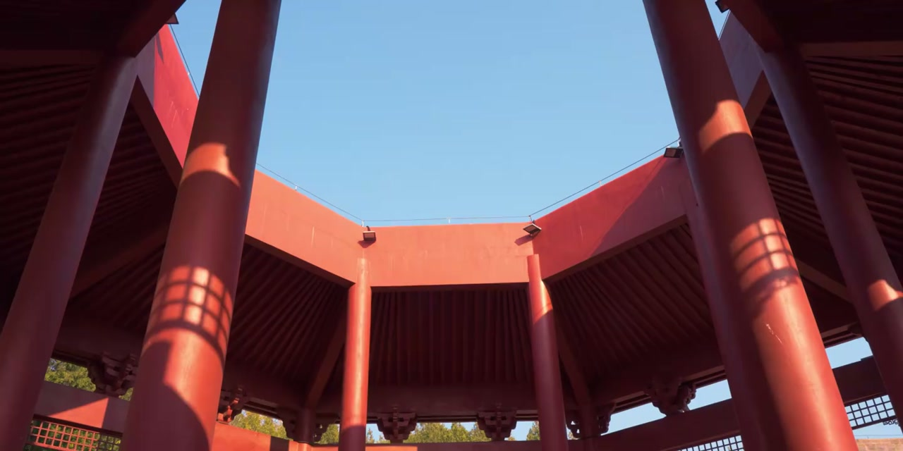
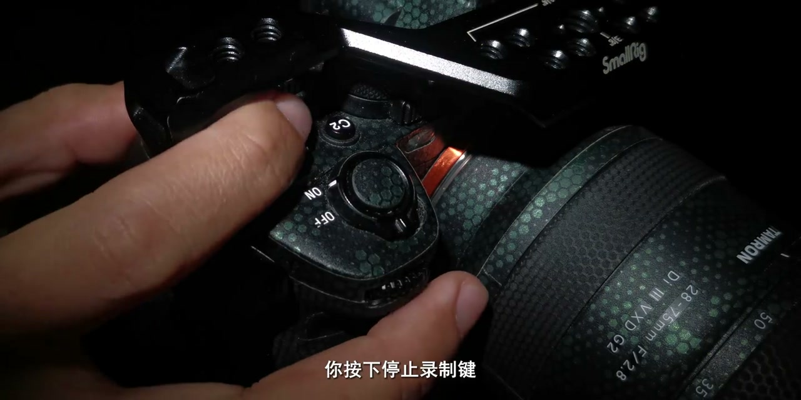
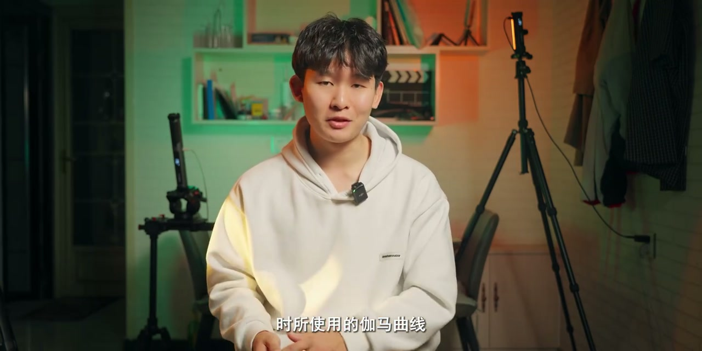
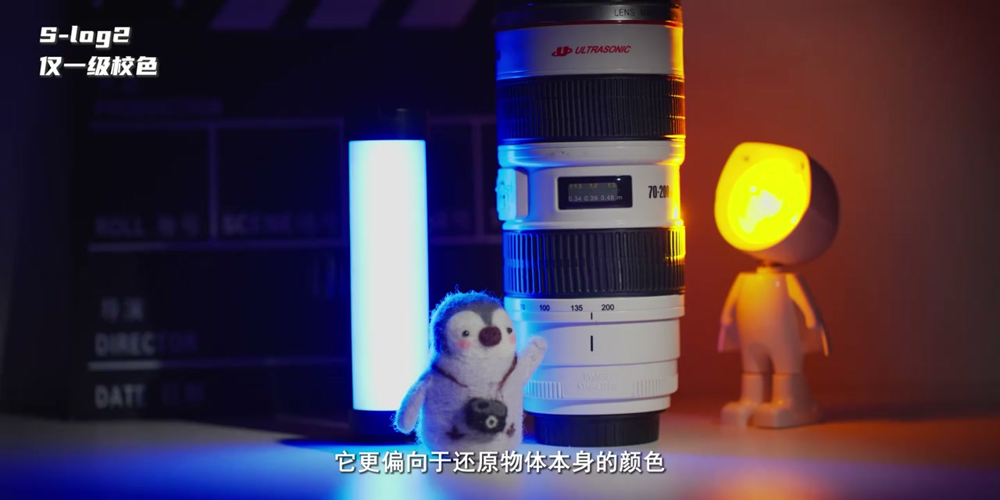
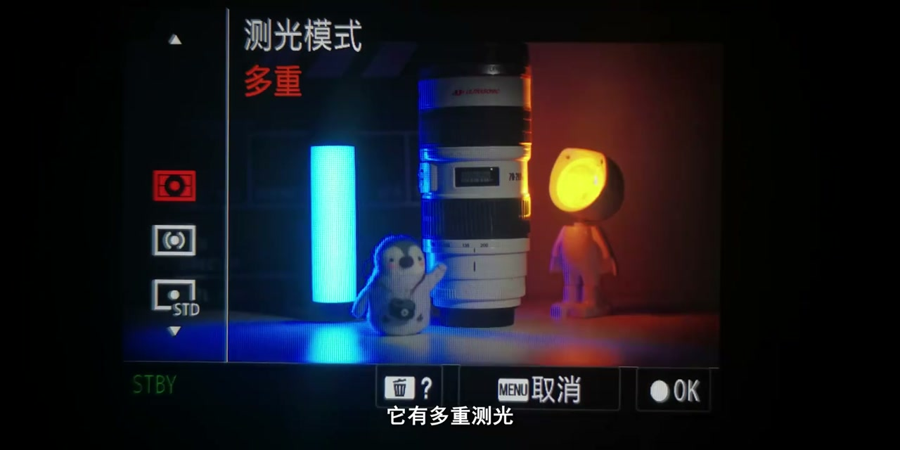
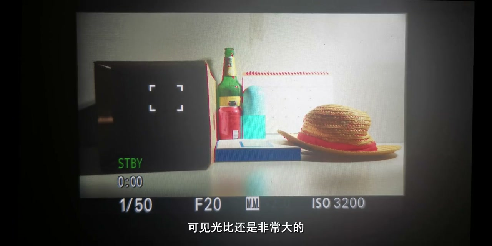
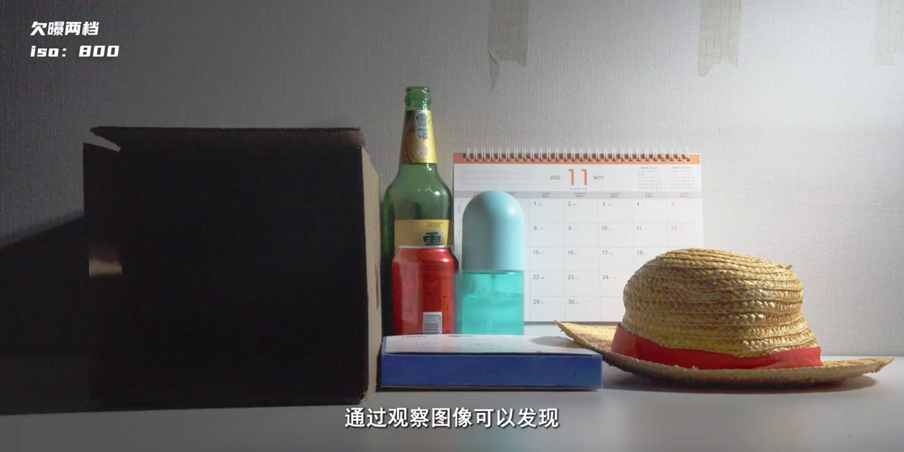

内容要点
[00:00] 索尼的PP值一直让我非常头疼
[00:03] 里面有各种Gama曲线
[00:05] 还有黑色等级
[00:06] 黑Gama
[00:06] 色彩模式
[00:08] 等九项大设置
[00:10] 和几十项小设置
[00:11] 每个设置都是什么原理呢
[00:13] 怎样设置才是最佳的
[00:16] 还有怎样才算是正确曝光呢
[00:18] 那么这期视频
[00:19] 我们就把图片配纸文件完全搞懂
[00:22] 看到最后
[00:23] 我相信你会有很大的收获
[00:25] 还请点亮三连
[00:27] 我们马上开始
[00:41] 仪术光
[00:41] 打在了一个物体上
[00:43] 这个物体向周围反射了光
[00:45] 当光线进入我们的眼睛里
[00:47] 我们就看到了这个物体
[00:49] 而相机也因此才能把它拍下来
[00:51] 所以相机是记录了
[00:53] 物体反射的光信息
[00:54] 而非物体本身
[00:56] 你的数码相机
[00:57] 再接收到这些光信息后
[00:59] 就会把它们处理成图像数据
[01:01] 但实际上
[01:02] 这数据量是非常惊人的
[01:05] 所以你的相机
[01:05] 会根据你选择的视频格式和编码器
[01:08] 对它们一顿打压
[01:10] 疯狂压缩
[01:11] 在这个过程中
[01:12] 无论压缩格式多么的先进
[01:15] 图像质量都会不可避免的降低
[01:18] 这也是为什么
[01:18] 弱格式的影像体积巨大的原因
[01:21] 因为它们记录了最多的图像数据
[01:24] 最后你按下停止录制键
[01:26] 相机就会对压缩好的图像数据
[01:29] 进行封装
[01:30] 于是你的存出卡里
[01:31] 就会有了一个视频文件
[01:33] 你可以通过显示屏
[01:35] 来读取这个视频文件里的图像数据
[01:37] 显示屏会把这些图像数据
[01:39] 再转化成光信息
[01:41] 于是你就看到了
[01:43] 你刚才所记录的光
[02:00] 因为很多光信息在压缩时就已经丢失了
[02:03] 所以前期拍摄出现的问题
[02:06] 往往后期是无法补救的
[02:07] 臭!这怎么谁拍的?真他们拉鸡
[02:10] 而图片配置文件
[02:12] 是在图像数据因压缩而受损之前
[02:15] 就修改了一些配置参数
[02:17] 这让它可以进行更高精度的图像调整
[02:20] 并获得更好的图像质量
[02:22] 所以用好图片配置文件
[02:24] 会对你的拍摄有很大的帮助
[02:27] 进入任意PP值的紫菜单
[02:30] 你会发现它有黑色等级
[02:32] Gama,黑Gama,西点
[02:33] 色彩模式,饱和度,色彩香味
[02:36] 色彩浓度,细节等9个大设置
[02:39] 在索尼的一些高端机行李
[02:41] 还有着色彩校正和色彩矩阵的设置
[02:43] 不过我手里并没有插球
[02:46] 或者威尼斯地...
[02:47] 接近平函了,兄弟们
[02:49] 所以说谁手里有什么插球
[02:52] 威尼斯电影机啊什么的
[02:53] 马上送我两台
[02:54] 我替大家测试一下
[02:56] 那我们先从最重要的Gama开始说起
[02:59] 一共有Muwei,Style,Seni,709,Slog,HLG
[03:03] S-Signitone,7类Gama可以选择
[03:06] 其中Muwei和Style
[03:08] 理论上大家应该非常熟悉
[03:10] 因为他们就是拍摄直出的视频
[03:13] 和照片时所使用的Gama曲线
[03:15] 如果你曾留心的话
[03:17] 我会帮你分享一下
[03:20] 如果你曾留心的话
[03:22] 会发现直出时视频和照片的画面
[03:25] 会有点区别
[03:26] 这正是因为Gama曲线的差异
[03:28] 导致的结果
[03:29] 而所谓的创意外观
[03:31] 你可以理解为
[03:32] 在这个Gama的基础上套的一个LAT
[03:35] 那到底什么是Gama呢
[03:37] 其实Gama就是输入信号
[03:39] 与输出信号之间的关系
[03:41] 输入信号可以理解为
[03:43] 来自物体的光信息
[03:44] 而输出信号就是相机最后输出的
[03:48] 理论上来说
[03:50] 来自物体的光信息越亮
[03:52] 那么输出的图像数据也应该越亮
[03:55] 他们应该是一个正比的线性关系
[03:57] 但实际上
[03:59] 早期的CRT显示器在转换图像数据时
[04:02] 却是一个曲线的
[04:03] 而不是线性的
[04:05] 为了将它修正成线性
[04:07] 就在相机拍摄时加入了相反的曲线
[04:10] 这就是Gama曲线
[04:12] 由于相机最早都是为了CRT显示器所设计的
[04:16] 所以后来出现的LCDLED
[04:19] 等新型显示器也模仿了CRT的Gama曲线
[04:22] 所以说
[04:23] 其实Gama曲线在生活中是很常见的
[04:26] 你所使用的任何相机 手机 显示器
[04:29] 背后都有Gama曲线在处理
[04:32] 其实相机不像人眼一样
[04:34] 他们很难处理一些大光比的场景
[04:36] 很容易导致画面中有嵌暴或者过暴的区域
[04:41] 聪明的影像研究者就想
[04:43] 也许可以扭转一下相机的Gama曲线
[04:46] 让它可以记录更大光比的画面
[04:48] 然后就出现了各种各样的Gama曲线
[04:51] 比如佳能有CLOG 松下有VLOG
[04:54] 索尼有SLOG
[04:57] 并不是所有的Gama曲线都是这个目的
[05:00] 也有一些Gama曲线是为了展现特别的影调
[05:03] 比如CINI和SCINITONE
[05:06] 也有些Gama曲线是作为一种标准Gama被使用
[05:10] 比如HRG和709
[05:12] 709作为一种非常标准的Gama曲线
[05:14] 它与非常标准的709色域一起使用
[05:18] 但我想应该很少有人使用PP值
[05:20] 是为了使用709Gama吧
[05:23] 所以我们重点讨论剩下的四种Gama
[05:26] CINI有CINI1、CINI2、CINI3、CINI4
[05:29] 他们各有不同
[05:30] 但总体来说
[05:31] 他们更偏向于直出
[05:33] 但又比直出拥有更大的动态范围和色彩空间
[05:37] 只要调整一些参数
[05:38] 完全可以当直出的素材来使用
[05:41] 这里我会更推荐使用CINI3
[05:43] 同样也偏向于直出的
[05:45] 还有SCINITONE
[05:47] 它是基于709Gama所开发的
[05:49] 所以它的动态范围并不宽广
[05:52] 而SCINITONE被开发的初衷
[05:54] 就是为了获得电影般的直出色调色彩
[05:57] 因此我觉得它不太能拥有实际干活或者创作中
[06:02] 最多只是玩一玩这个模式用来拍拍VLOG
[06:05] 体验一下这样子
[06:07] 真正干活还得上HRG和SCLOG
[06:10] HRG我相信是被最多人使用的一种Gama
[06:14] 作为HDR制作的标准Gama配合BT2020
[06:17] 它会拥有较为宽广的动态范围和色彩空间
[06:21] HRG也有HRG、HRG、1、HRG、2、HRG3的区别
[06:26] 其中HRG就是HRG3
[06:29] 他们的ISO起始直动态范围和噪点表现各有不同
[06:34] 理论上也对应着不同的使用场景
[06:37] 但实际上我还是推荐你使用HRG3
[06:41] 可以看到在其他参数相同的情况下拍摄
[06:44] 它的动态范围要比1和2好太多了
[06:47] 而噪点表现就没有那么明显的区别
[06:50] 但如果你想获得更好的动态范围
[06:53] 那就需要SLOG了
[06:55] SLOG也有SLOG1、SLOG2、SLOG3
[06:58] 当然你现在应该不会再看到所谓的SLOG1
[07:02] 因为它已经被淘汰了
[07:04] 而SLOG2就是在SLOG11基础上优化改进后的曲线
[07:09] 它更偏向于还原物体本身的颜色
[07:11] 但SLOG3是一条全新开发的曲线
[07:15] 它更偏向于模拟胶片质感
[07:17] 简单来说SLOG3大约比SLOG2多出了1.5档记录能力
[07:22] 在18度灰和暗部的表现会比SLOG2更亮一些
[07:26] 这也是为什么很多人会出SLOG3的噪点更多的原因
[07:30] 但实际上这两条曲线的噪点输出是一样的
[07:34] 它们并没有改变CMOS的性噪比
[07:37] 只是因为SLOG3的暗部更亮了
[07:40] 噪点看起来就会更多更明显
[07:43] 但后期把暗部压到同一亮度
[07:45] 两个曲线的噪点会是一模一样的
[07:48] 所以SLOG3会比SLOG2更优秀一些
[07:52] 当然你也会发现在使用LOG和HLG时
[07:56] 画面会变得灰灰的
[07:57] 你可以找到干嘛显示辅助
[07:59] 保持开和自动即可
[08:02] 它会帮你在前夕有一个正常的监看
[08:05] 但也不要过分相信它的显示
[08:07] 虽然SLOG在索尼设备上拥有最宽广的动态范围
[08:11] 但如果把握不好曝光的话
[08:14] 效果反而会更差
[08:15] 在讨论如何正确曝光之前
[08:18] 先简单介绍一下18%灰
[08:21] 正常来说一个纯白的物体
[08:23] 它对光的反射率为100%
[08:26] 而一个纯黑的物体对光的反射率为0%
[08:29] 那么理论上来说
[08:31] 中间灰对光的反射率应该是50%
[08:35] 但实际上并不是这样
[08:37] 只有当一个物体对光的反射率为18%
[08:41] 它对人眼来说才是一个中间灰
[08:43] 也叫18度灰或者中性灰
[08:46] 它对摄影是一个非常重要的曝光参考
[08:49] 很多色卡上都会有中性灰
[08:51] 相机中MM测光数值为0时
[08:54] 即表示中性灰
[08:56] 也就是正常曝光
[08:57] 它对人眼来说是一个比较舒服的亮度
[09:00] 虽然刚才的LOG图表中的EF范围
[09:03] 同样以中性灰为0
[09:05] 但是他们的一党两党并不是同一个概念
[09:08] 那我们再来说说三个重要的辅助曝光的工具
[09:11] 首先就是测光模式
[09:14] 它有多重测光
[09:15] 中心测光点测光
[09:17] 平均测光
[09:18] 强光测光五种模式
[09:20] 多重测光作为默认的测光模式
[09:22] 可以应对绝大多数的拍摄场景
[09:25] 它把画面分割成几个区域
[09:27] 分别测光
[09:28] 再给出一个适当的测光数值
[09:30] 但如果画面的光比过大
[09:32] 这时候你就需要使用强光测光或者点测光
[09:36] 来保证高光信息不会过报丢失
[09:39] 这一般在拍摄日落以及人物检影等画面非常实用
[09:43] 而中心测光则对应了中心式构图
[09:46] 来保证构图主体曝光正确
[09:48] 平均测光一般对应对摄式构图
[09:51] 总体来说多重测光绝对可以覆盖至少95%的拍摄场景
[09:56] 而其他测光模式确实很少用到
[09:59] 尤其是平均测光
[10:01] 我们都知道在SLOCK模式下需要过报一两档
[10:04] 才会获得最好的动态范围和画质
[10:07] 但我们也知道有五种不同的测光模式
[10:10] 一个画面中往往会有高光、阴影和充电调
[10:14] 它们的测光数值是不一样的
[10:17] 那究竟要让哪一块区域过报极档才是最好的呢
[10:21] 于是我就建立了一个实验
[10:23] 在纯黑的室内只打一束独立的硬光源
[10:26] 摆上红、黄、绿、蓝等几种颜色的物品
[10:30] 并放置了一个纸箱
[10:31] 这样就有了高光、中间调、阴影以及黑色
[10:35] 当然如果有色卡以及X、Y、L、A动态范围测试图卡
[10:40] 会让整个实验更加严谨
[10:42] 但是我想让它更加接近真实的拍摄场景
[10:45] 首先测试的就是SLOCK 3
[10:47] 使用的是PP8的默认设置
[10:50] 此时把光圈衡定为F20
[10:53] 并调整为手动对焦
[10:55] 使对焦点固定在墙上
[10:57] 把测光模式更改为多重测光
[11:00] 当SLO为300020
[11:02] 测光数值为固定正二
[11:04] 此时改为点测光
[11:06] 测的中间部分画面为数值正二
[11:09] 而高光部分则是超过了正二开始不断闪烁
[11:13] 暗部则是-2不断闪烁
[11:16] 可见光比还是非常大的
[11:18] 这里我们就要介绍第二种辅助曝光的工具
[11:21] 直方图
[11:22] 它在屏幕上以举行图显示
[11:25] 从左到右依次代表了黑色到白色的过度
[11:28] 而白色部分则代表了该明暗程度下的相复数量
[11:32] 白色部分越靠左
[11:34] 就代表画面越暗
[11:36] 反之画面就越亮
[11:37] 这就是所谓的向右曝光
[11:39] 当出现白色立住时
[11:41] 就表示你的画面中有过曝的区域
[11:44] 并且无法后期还原
[11:46] 整体来看它代表了CMOS上的像素
[11:49] 接收光的直方分布图
[11:52] 网上流传很广的一种说法
[11:54] 就是将曝光尽量向右
[11:56] 直到出现白色的立住
[11:58] 然后再退后一档SO
[12:00] 这就是SLOG下碎加的曝光
[12:03] 此时SO为16000
[12:05] 所以我拍摄了从SO800到20,000的全部素材
[12:09] 通过观察波形图和灰片素材
[12:12] 我们可以发现
[12:13] 欠暴的情况下
[12:14] 整个波形图都偏向于暗部
[12:16] 尤其是黑色部分被压缩的很厉害
[12:19] 素材看上去就是一片黑
[12:21] 甚至在光照充足的地方也出现了噪点
[12:25] 正常曝光时波形图仍然偏向于暗部
[12:28] 素材还是偏暗
[12:30] 而过曝两档时
[12:32] 波形图回中了不少
[12:33] 素材看起来也比较正常
[12:35] 而在SO16000时
[12:38] 可以明显的观察到
[12:39] 波形图已经偏中上了
[12:41] 素材看起来爆掉了
[12:43] 但好处是
[12:44] 可以发现它的暗部被拉伸了不少
[12:47] 这代表着暗部细节增加了很多
[12:50] 但在SO20,000时
[12:52] 已经是大面积像素过曝
[12:54] 然后我对素材做了简单的校色和亮度匹配
[12:57] 通过观察图像可以发现
[12:59] 欠曝时即使在基础SO800下
[13:03] 整个图像依然是各种噪点
[13:05] 所以千万不要欠曝
[13:07] 而在正常曝光时
[13:09] 高光正常
[13:10] 但暗部纯净的只剩下噪点
[13:13] 不过当我们继续提高SO
[13:15] 暗部细节就会慢慢出现
[13:17] 噪点也会变少
[13:19] 甚至到SO12800
[13:21] 你仍然可以恢复绝大多数高光细节
[13:24] 并得到差不多的画面
[13:26] 所以最后的结论是
[13:28] 不要有立起来的小柱子
[13:29] 不要欠曝和正常曝光
[13:32] 不要用扩展SO
[13:33] 它相当于后期拉高或降低曝光
[13:36] 会直接损失动态范围
[13:38] 使用多重曝光在过曝一到两档时
[13:41] 你得到的画面还是可用的
[13:43] 但最好的曝光范围是两到三档
[13:46] 如果你想稳一点
[13:48] 那就老老实实过曝两档
[13:50] 但如果你想获得更好的暗部细节
[13:52] 可以继续相由过曝到三档
[13:54] 画面也会不错
[13:55] 假如你还想获得更多暗部细节的话
[13:58] 可以激进一点
[13:59] 继续相由曝光
[14:00] 暗部细节会继续扩展
[14:02] 但噪点也会随之增加
[14:05] 同时也会逐步牺牲掉一些高光细节
[14:08] 但是如果遇到一些光比很大的复杂情况
[14:12] 我们如何才能确定画面中的哪些部分
[14:15] 已经开始损失高光细节
[14:17] 哪些部分是过曝两档的呢
[14:20] 这就要介绍第三个辅助曝光的工具
[14:22] 半码线
[14:23] 在索尼大部分相机上
[14:25] 你都可以看到半码线功能
[14:27] 它有两种类型模式
[14:28] 分别是下线和标准加范围
[14:31] 右侧数值是亮度水平
[14:33] 它是L1单位
[14:35] 由无线电工具






